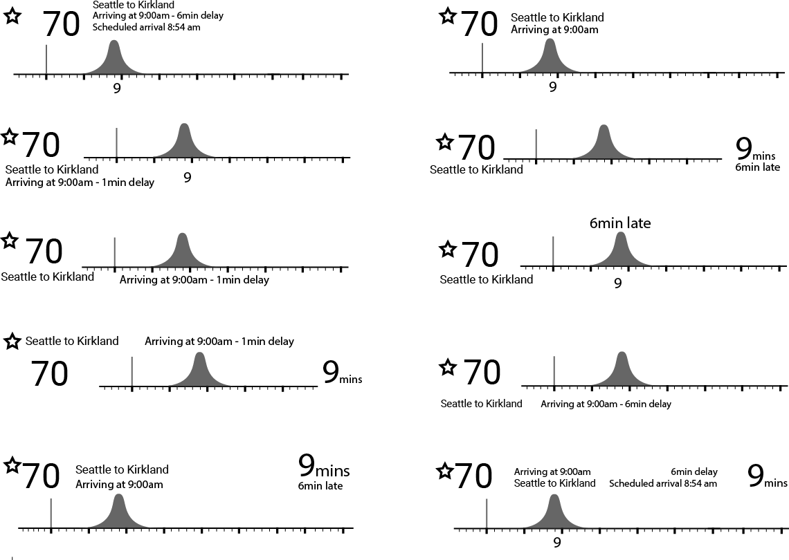
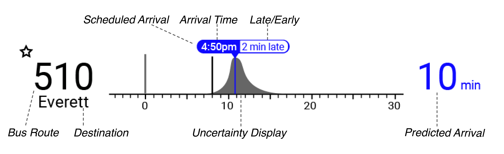
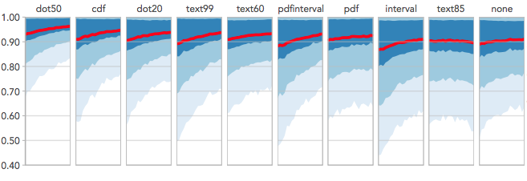

Even with the help of mobile trip-planning apps, making a decision of when to leave to catch a bus can be extremely difficult. Realtime predictions used in trip-planning apps present a prediction of when a bus is most likely to come but, fail to accurately communicate the uncertainity that underlies the prediction. UncertainBus seeks to better enable public transit riders to understand the unpredictability of bus arrival times in order to help bus users to better make decisions around realtime transit data.
UncertainBus is an ongoing academic project that seeks to investigate the effect uncertainity information has on decision making. While working on the project, I took on many roles including: front end developer, data analyst, Design researcher and technical writer. The following write up however focuses on how my role as UX designer led to the sucessful testing of 20 different uncertainity display types.
Role
UX Designer
Team
3 Investigating Professors(CSE, Informatics and HCDE)
Two Undergraduate Research Assistants
Length
~1.5 years
Outcome
The project tested designs of 14 different visualizations and 6 different text representations on 600 people to establish which design was best optimized for decision-making. The results we’re reported and submitted to the conference on Computer-Human Interaction 2018.
Not all predictions made by computers are easy to interpret. Understanding the underlying complexity of a prediction made by a computer might help users of the system make more rational decisions. However communicating the results of the decision in a way that is glanceable and useful for a wide audience poses a challenge.
The Uncertain Bus project expands on past research examining how to best visualize a bus arrival time using a machine learning system. Past research established feasibility and design criteria for displaying uncertainity in realtime data. On this project, I began my role as a designer and front-end developer. I converted findings from previously done research into an User Interace that was used to establish how uncertainty represenations affect the decision-making processes.
The goal of this project was to provide a proof that people can use uncertainity information to make better decisions, specifically around realtime information. To achieve the goal, I set the following design goals:
To further understand the context of the design work discussed in this process breakdown, please refer to the paper my research group and I submitted for peer review at CHI 2018. The following focuses on my role and contributions as a UX designer on the project.
At the start, I intially thought 6 displays would be tested and knew my display would have to be interchangable. Designing with a modular perspective ended being key to the sucess of the project because in the end over 20 different variations of displays were tested. Having an interchangable design layout allowed for all 20 variations to be easily implemented and tested.
For this project, my design process adapted in an agile way to fit the unique constraints of designing a modular system that needed to accurately represent a real world situation. Starting my design process by designing individual components before piecing the components together was key to the eventual success of the interface.
Since the basic parameters of the interface we're already set, for this project, my first step was step by breaking down the larger interface into the necessary pieces I knew the final design would include. These pieces became the building blocks that I fit together, like a puzzle, to find the correct layout.
From the pieces above, I created rapid iterations of the layout. I choose to use stand in information instead of wire frames because in this situation the layout of information matters, what each information piece means in the context of the larger interface determined the necessary form of the layout.
UncertainBus choose to follow the standard set by the popular trip planning app OneBusAway. We did this because the open sourced code for OBA would allow later stages of the project to adapt the OBA source code for our interface. To engage the users in a similar way established by OBA, I needed to recreate the look, feel and most importantly the information stored on OneBusAway to the UncertainBus interface. The challenge here was integrating uncertainty displays into the OneBusAway system while mantaining glancability. I solved this design problem by encoding the information found in OBA directly into the uncertainity visualization it self. Encoding information directly within uncertainity displays created a more cohesive and informationally-rich interface.
During intial usability tests, I found that some of the UncertainBus interface did not make sense to people making decisions with realtime transit data. In particular, annotations that informed the user on how late or early a bus may come compared to its original scheduled arrival time interfered with decision making. I found that while late-or-early annotations confused participants as to whether to pay attention to the uncertainity representation or the annotation. Since, in most cases, late annotations don't give an actual indication of the likelihood of a bus coming earlier or later, the annotation and color correspondance that go along with it we're removed from the system. Making for a simpler, more effective interface.
My design was tested throughout the design process with guerilla usability tests(12+ people) and pilot offerings(160 people) of our online experiment. After intial tests, 400+ people participated in our experiment which asks participants to make decisions on when to leave for a bus based on a given scenario using a randomily assigned version of our interface as their decision-making tool. We used Data analysis using quantiative metrics collected during the experiment to find Dot-Plots allowed people to make the most optimal decision making around when to leave for the bus.
The figure below fits regressions lines that represents the learning curve of decisions average participants made during our experiment. Our results show that not only do Dot-Plots provide for the most accurate decision making, they also provides for the most consistent decision making. Consistent and accurate decision making suggests that Dot-Plots allow for the "best" overall decisions to be made on a whole.
This experiment succeeded in showing how uncertainty displays can effectively aid people in making deicisions around realtime predictions. However, to truly understand the effect uncertainity displays have on decision making, more work must be done to see how people's sentiments towards uncertainity displays may change over time.
My last act on this project was to create a design based off the data collected from the experiment. I used the finding that Dot Plots allow for the best decision making around realtime transit data to create an interface that spatially accomodates for this particular design.